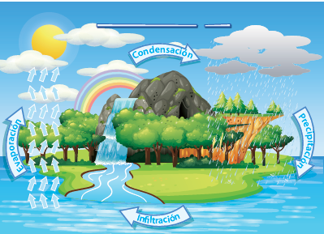
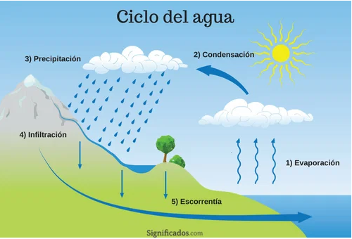
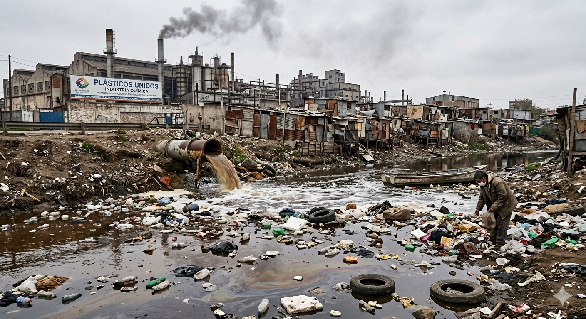
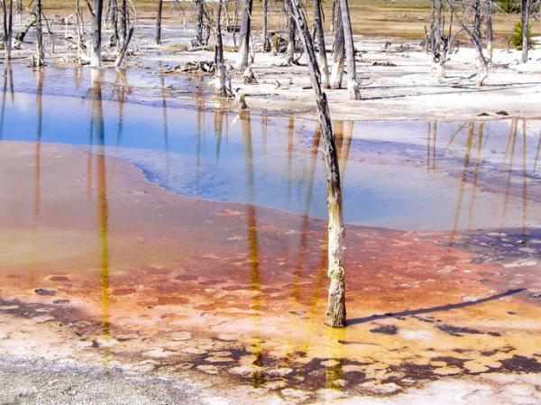
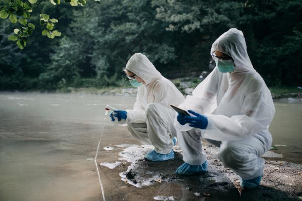
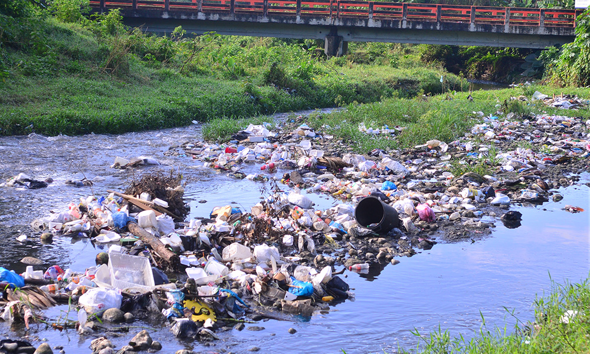
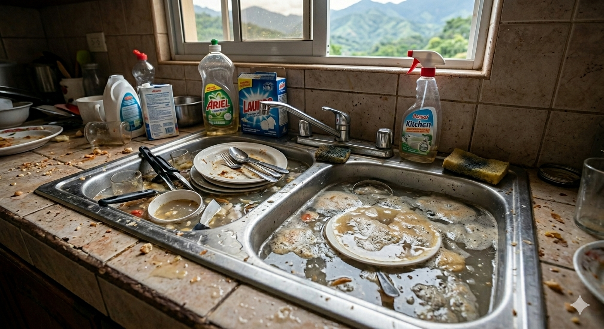
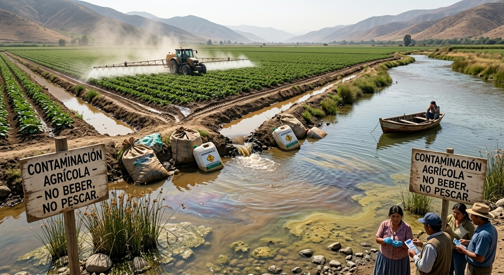
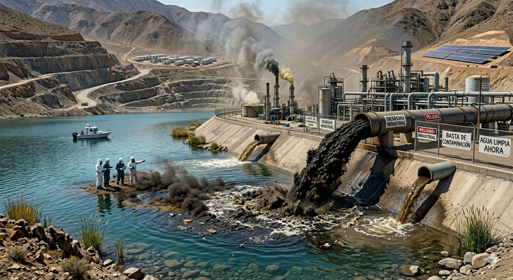
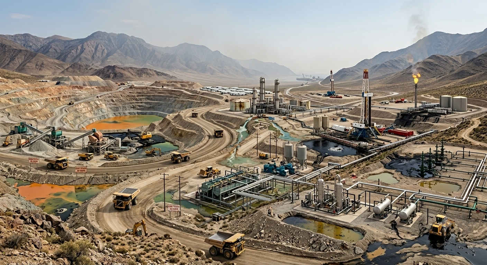

El agua es una sustancia esencial para la vida, compuesta por dos átomos de hidrógeno y uno de oxígeno (H₂O). Cubre alrededor del 71% de la superficie terrestre y se encuentra en estado líquido, sólido (hielo) y gaseoso (vapor).

Las aguas cubren cerca de dos terceras partes del planeta Tierra y participan de los diferentes procesos que incluyen las características climáticas, la distribución de la vida vegetal y animal y como elementos de modelación del relieve, siendo necesarias para el desarrollo de diversas actividades humanas.
Propiedades físicas: el agua se puede encontrar en tres estados: sólido, líquido y gaseoso. No tiene color, sabor, ni olor. Su punto de congelación es 0 ºC, y el de ebullición es 100 ºC. Tiene la capacidad de absorber calor antes de que suba su temperatura.
Propiedades químicas: tiene la capacidad de disolver más sustancias que cualquier otro líquido. El agua no es ni básica ni ácida, siendo su pH 7, que es neutro. Reacciona con los óxidos ácidos, óxidos básicos, metales y no metales.
El agua es multifacética, se derrama en ríos, corre por cataratas, revolotea en mares y océanos, se amontona en témpanos de hielo, con sus torrentes atraviesa las capas superficiales de la tierra, plantas y animales. Ella se encuentra en todas partes, en las rocas, plantas y animales, en la atmosfera. En la naturaleza, no siempre está distribuida proporcionalmente. En algunos lugares es tanta que provoca inundaciones, mientras que, en otros, su ausencia causa grandes sequías.
La falta de agua potable aumenta, no sólo por el crecimiento poblacional y el avance del desierto, sino también, la contaminación de las aguas naturales. En el desierto se sufre de sed, por la falta de montañas y bosques para que se produzcan lluvias, sin embargo por debajo corren ríos subterráneos con capacidad para darle agua a millones de personas.

Evaporación , cuando se convierte en vapor de agua y sube a la atmósfera; condensación, cuando se enfría y se concentra en partículas que forman las nubes y neblinas; precipitación, cuando cae a la superficie en forma de gotas, nieve o granizo; infiltración cuando una parte penetra al suelo y otra es aprovechada por los seres vivos; y escorrentía, cuando se desplaza en la superficie para llegar a ríos, lagos y océanos.

El conjunto de las aguas terrestres es conocido como hidrosfera y este subsistema del sistema terrestre interactúa con otros como la atmósfera, la litósfera, la biosfera y la antroposfera.

La contaminación del agua es la alteración de su composición natural por la presencia de sustancias físicas, químicas o biológicas que degradan su calidad y la hacen inadecuada para el consumo humano y la vida acuática.
Este tipo de contaminación puede ser causada por la presencia de desechos sólidos, vertidos industriales, aguas residuales sin tratar, productos químicos agrícolas y contaminantes atmosféricos que se depositan en los cuerpos de agua.

Contaminantes químicos
Son sustancias artificiales o naturales
que, al entrar en contacto con el agua, modifican su composición y generan
efectos negativos en la salud y los ecosistemas. Se originan principalmente
en la actividad industrial, la agricultura intensiva y los residuos domésticos.
Metales pesados: como plomo, mercurio y cadmio, que se acumulan en organismos acuáticos
y alteran la cadena alimentaria.
Pesticidas: productos agrícolas que se filtran en ríos y acuíferos, dañando flora y fauna.
Desechos industriales: vertidos químicos de fábricas que contaminan cuerpos de agua y ponen en riesgo comunidades cercanas.

Contaminantes biológicos
Son organismos vivos que ingresan al agua y pueden provocar enfermedades en humanos y
animales. Este tipo de contaminación es frecuente en lugares con deficiente saneamiento
o donde se vierten aguas residuales sin tratamiento.
Bacterias: como Escherichia coli, indicador de contaminación fecal.
Virus: por ejemplo, el norovirus, que causa gastroenteritis.
Parásitos: como Giardia y Cryptosporidium, responsables de infecciones intestinales.

Contaminantes físicos
Se refieren a materiales sólidos o condiciones físicas que deterioran la calidad del agua.
No siempre son tóxicos, pero afectan la vida acuática y la potabilidad.
Sedimentos: arrastrados por la erosión del suelo y la escorrentía agrícola.
Residuos sólidos: plásticos y basura que se acumulan en ríos y mares, dañando ecosistemas.
Temperatura: el calentamiento del agua por procesos industriales altera el equilibrio de los
organismos acuáticos.

La contaminación del agua se produce cuando sustancias nocivas, como productos químicos o microorganismos, contaminan una masa de agua, haciéndola perjudicial para la salud humana y el medio ambiente. Estos contaminantes pueden tener su origen en diversas fuentes y normalmente se clasifican como fuentes puntuales o no puntuales de contaminación.
Aguas residuales y cloacales
Son los desechos líquidos que provienen de hogares, comercios, instituciones y
también de industrias. Se dividen en aguas negras (inodoros) y aguas grises
(lavabos, duchas, lavadoras). Cuando no se gestionan adecuadamente, contaminan
ríos y lagos con bacterias, virus, nutrientes y toxinas. Las aguas industriales
son aún más peligrosas porque contienen metales pesados y químicos difíciles de
tratar.

Contaminación agrícola
La agricultura, aunque vital,
genera contaminación por el uso excesivo de pesticidas y fertilizantes,
que se filtran al suelo y contaminan aguas subterráneas y superficiales.
Los desechos animales aportan bacterias y nutrientes que provocan floraciones
de algas y deterioro de ecosistemas. La erosión del suelo arrastra contaminantes
a ríos y mares, y el riego inadecuado puede causar salinización.

Residuos industriales
Las industrias vierten desechos no tratados
en ríos y lagos, incluyendo metales pesados, aceites, grasas, tintes y químicos tóxicos.
Estos residuos forman capas que bloquean el oxígeno y reducen la biodiversidad. Además,
los residuos térmicos (agua caliente) alteran los ciclos de vida acuáticos.

Explotación de minerales e hidrocarburos
La extracción de minerales y
combustibles fósiles (carbón, petróleo, gas natural) genera desechos sólidos, líquidos y
químicos que contaminan cuerpos de agua.

Cuando se habla de agua potable estamos refiriéndonos a un agua libre de elementos que representen un riesgo para la salud, tanto en las áreas microbiológica, físico-química y toxicológica. El agua potable debe ser inodora, incolora e insípida y libre de partículas en suspensión, que no excedan 5 NTU (Unidades Nefelométricas de Turbiedad), acorde con la Organización Mundial de la Salud (OMS).
Físicos y químicos: temperatura, pH, conductividad, nitratos, nitritos, amoníaco, etc.
■ Microbiológicos: coliformes totales, coliformes fecales, bacterias
aerobias, pseudomonas, Escherichia coli, entre otros.
■ Toxicológicos: selenio, arsénico, cadmio, cianuro, fluoruros,
cromo hexavalente, plomo, entre otros.
■ Agente desinfectante: cloro residual u otro agente desinfectante
autorizado por el Ministerio de Salud Pública que debe estar entre
0.2-1.0 ppm (partes por millón). Guías de referencia NORDOM 1,
Decreto 42-05.

El proceso de potabilización del agua pasa por los siguientes pasos:
■Captación. En esta etapa el agua se extrae des
de las fuentes naturales, generalmente de los ríos.
■ Canalización. El agua captada es conducida
hacia la planta potabilizadora.
■ Coagulación o mezcla rápida. Proceso donde
se aplican los químicos que neutralizan las car
gas de los sólidos suspendidos en el agua.
■ Floculación. Proceso por el cual se unen las
partículas en suspensión después de neutraliza
das las cargas, formando los flóculos o aglome
raciones de partículas, que al ser más pesados
que cada partícula individual, se asienta, elimi
nando la turbidez y clarificando el agua.
■ Decantación o sedimentación. Proceso me
diante el cual el agua es colocada en un módulo
de la planta potabilizadora llamado decantador
o sedimentador, donde reduce su velocidad a
tal nivel que se produzca la separación del lí
quido y los sólidos.
■ Filtración. En esta fase el agua se hace pa
sar por un medio poroso, generalmente arena,
donde se eliminan partículas en suspensión,
quedando el agua con un nivel de turbiedad
dentro de normas establecidas por la Orga
nización Panamericana de la Salud y los mi
croorganismos que estuvieron presentes se eli
minan en un 95 %.
■ Desinfección. Se eliminan los microorganis
mos restantes utilizando diferentes productos
químicos y se deja un residual, como protec
ción de la calidad, dentro de normas estable
cidas para que sea eliminado cualquier mi
croorganismo que por alguna vía penetre a la
tubería a través de la cual se conduce el agua a
los hogares.
■ Distribución. Terminado el tratamiento de
potabilización, el agua es conducida por una
red de tuberías a los consumidores.

En el año 2014 en la ciudad de Flint, en el estado de Michigan, Estados Unidos, ocurrió un grave problema de contaminación del agua. El cambio del suministro de agua de la ciudad del lago Hu rón por el río Flint provocó a la contaminación por plomo creando un grave problema de salud pública. El agua del río Flint corroyó las tuberías viejas de agua y se mezcló con el suministro de agua que tenía un alto contenido de plomo. Debido a esto entre 6,000 y 12,000 niños presentaron elevados niveles de plomo en la sangre lo que repercutió de forma negativa en su salud.
Investigo cuáles son los materiales con los que se elaboran las tuberías para transportar el agua potable.
Investigo cuáles son los efectos del plomo en la sangre.